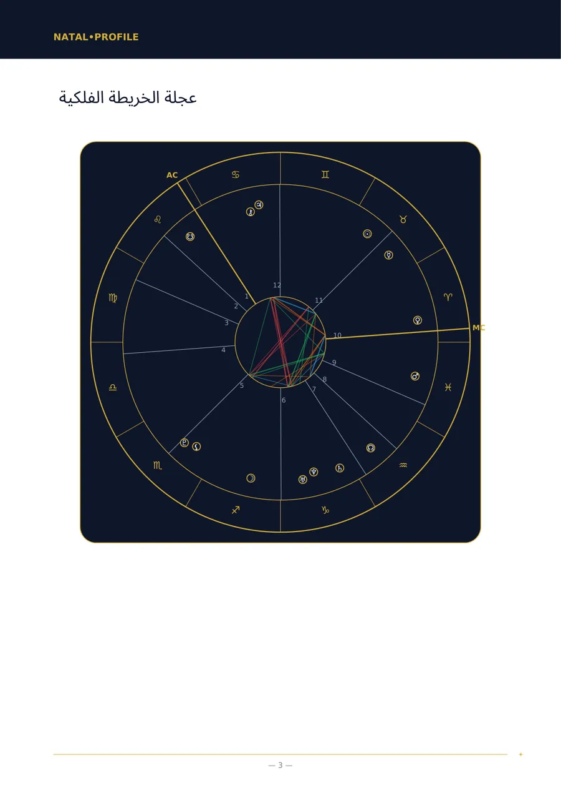
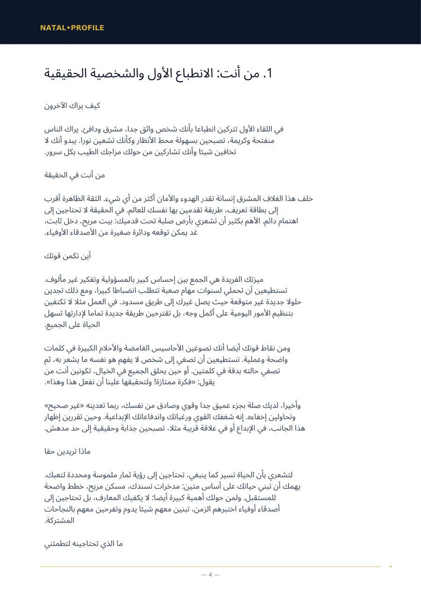
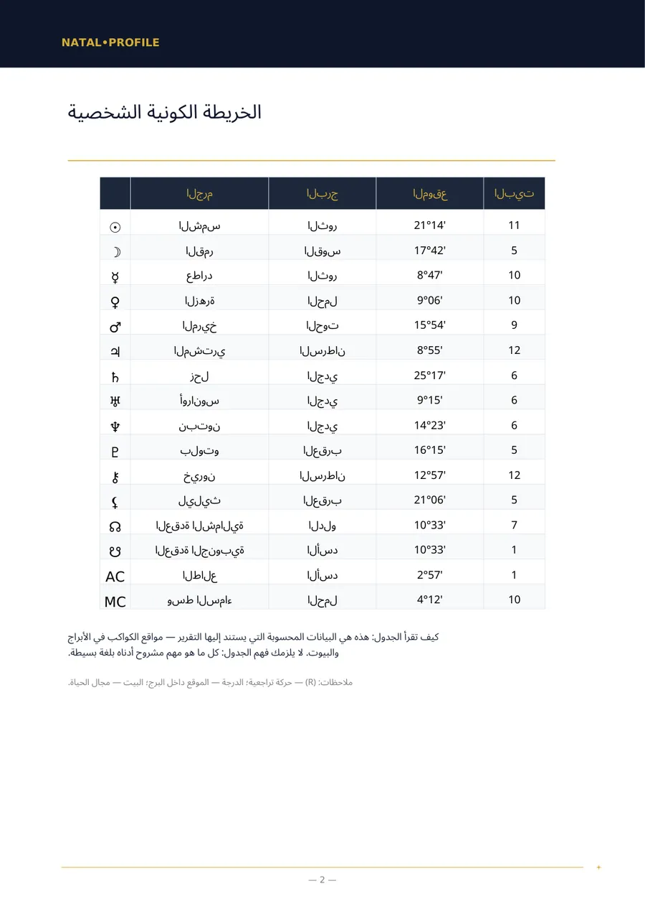
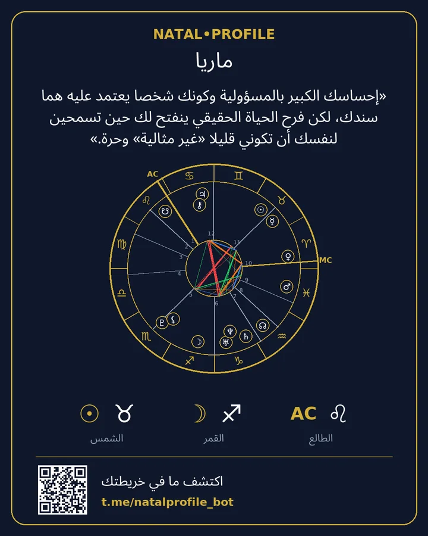

خريطة ميلادك، مشروحة بلغة بسيطة
أدخل تاريخ ميلادك ووقته ومدينته، وخلال دقائق يصلك ملف PDF: كيف هي شخصيتك، أين تكمن قوتك، ما الذي يعيقك ومن أين تبدأ. بلا مصطلحات معقدة وبلا كلام عام عن الأبراج.
- الحساب وفق Swiss Ephemeris
- 15 لغة
- بلا اشتراك
حسابان سريعان
يجريان في متصفحك. لا يُرسَل شيء ولا يُحفظ.
برج الشمس والعنصر
حلّل الخريطة كاملة →برج الشمس نقطة واحدة من عشرات النقاط في الخريطة. التقرير يأخذ في الحسبان جميع الكواكب والبيوت والروابط بينها.
رقم مسار الحياة
احصل على التحليل الرقمي →يُحسب بالطريقة نفسها المستخدمة في تقرير البوت: تُجمع أرقام التاريخ حتى يبقى رقم واحد. أما أرقام الاسم فتُحسب في البوت.
كيف يبدو التقرير
صفحات حقيقية من تقرير «الخريطة الفلكية». هذا مثال: بيانات الميلاد فيه خيالية.




«إحساسك الكبير بالمسؤولية وكونك شخصًا يُعتمد عليه هما سندك، لكن فرح الحياة الحقيقي ينفتح لك حين تسمحين لنفسك أن تكوني قليلًا «غير مثالية» وحرة.»
ما الذي يمكنك طلبه
قوائم الفصول في صفحات التقارير هي نفسها التي تصلك في ملف PDF. الأسعار بنجوم تيليغرام (Telegram Stars).
الخريطة الفلكية الشخصية (تحليل كامل)
تحليل كامل لشخصيتك من تاريخ الميلاد ووقته ومكانه.
الخريطة الفلكية الشخصية (تحليل أساسي)
تحليل لشخصيتك حين يكون وقت الميلاد مجهولًا.
تحليل التوافق (كامل)
شخصان: ما الذي جذبكما، وأين تختلفان، وماذا يمنح كلٌّ منكما الآخر.
تحليل التوافق (أساسي)
توافق الشخصيتين حين يكون وقت الميلاد مجهولًا.
تحليل المسار المهني والمالي
ما الذي تجيده في العمل، وأي المهن تناسبك، وكيف تتعامل مع المال.
الخريطة الفلكية للطفل — دليلك لفهم طفلك بشكل أعمق
ما الذي يحتاجه طفلك ليشعر بالطمأنينة وبماذا تسانده.
التوقع السنوي (العودة الشمسية)
موضوعات عامك من عيد ميلاد إلى الذي يليه، مع فترات محددة بالتواريخ.
توقع اليوم
توقع لليوم بحسب التوقيت الدقيق لاتصالات القمر.
علم الأعداد بالاسم وتاريخ الميلاد
أرقام اسمك وتاريخ ميلادك وفق نظام فيثاغورس.
الخريطة الفيدية (جيوتيش)
الخريطة الفيدية: اللاغنا والغراهات والناكشاترا وفترات الداشا.
كيف يعمل
من الرسالة الأولى إلى الملف الجاهز في دقائق.
افتح البوت
في تيليغرام، بلا تسجيل ولا كلمات مرور.
أدخل بياناتك
الاسم وتاريخ الميلاد ووقته ومدينته. تُختار المدينة من قائمة.
استلم ملف PDF
عادة خلال 5 دقائق. يصل الملف إلى المحادثة مباشرة.
احتفظ بالبطاقة
صورة فيها خريطتك والعبارة الأهم في التقرير.
الدفع
تُدفع التقارير بنجوم تيليغرام داخل المحادثة مع البوت. لا يوجد اشتراك: تدفع مرة واحدة لكل تقرير.
الفصل الأول من التحليل الفلكي مع خريطتك وبرج اليوم: كلٌّ منهما مرة واحدة بلا مقابل.
تدفع ثمن تقرير وتحصل على رابط. يفتحه صديقك ويدخل بياناته ويستلم التحليل.
في البوت مساعدة بعنوان «لا تستطيع الدفع؟»، والدعم يجيب عبر تيليغرام.
بياناتك
تاريخ الميلاد ووقته ومكانه لازمة فقط لحساب الخريطة وكتابة التقرير.
بعد إرسال ملف PDF يُمحى الاسم وتاريخ الميلاد ووقته ومكانه.
يبقى ملف PDF على الخادم 24 ساعة ثم يُحذف. ويبقى عندك في المحادثة.
الحاسبات تعمل في متصفحك. لا نماذج في الموقع ولا تسجيل ولا أدوات تتبّع.
أسئلة شائعة
لا أعرف وقت ميلادي. ماذا أفعل؟
اختر تقريرًا «بلا وقت ميلاد». لا يتضمن البيوت والطالع، لكن الشخصية والمشاعر وطريقة التفكير والعلاقات تُوصف من دونهما.
بماذا يختلف عن أبراج الحظ؟
أبراج الحظ تعتمد على موقع الشمس وحده. أما التقرير فيحسب جميع الكواكب والبيوت والروابط بينها لتاريخ ميلادك ووقته ومكانه.
من يكتب نص التقرير؟
يحسب برنامجٌ مواقع الكواكب وفق Swiss Ephemeris. ثم يكتب نموذج لغوي النص انطلاقًا من تلك الحسابات وفق قواعد ثابتة.
بأي اللغات تتوفر التقارير؟
بخمس عشرة لغة: الإنجليزية والروسية والإسبانية والهندية والبرتغالية والفيتنامية والتركية والإندونيسية والأوزبكية والكازاخية والفرنسية والألمانية والإيطالية والعربية والفارسية.
هل يمكن استرداد المبلغ؟
يُعدّ التقرير لك شخصيًا، لذلك لا يُسترد المبلغ بعد استلام ملف PDF. وإذا لم يُنشأ التقرير بسبب خطأ منا يُعاد المبلغ كاملًا.
ابدأ بالفصل المجاني
نحسب خريطتك ونرسل لك الفصل الأول من التحليل الحقيقي. إن أعجبك تطلب التحليل الكامل.